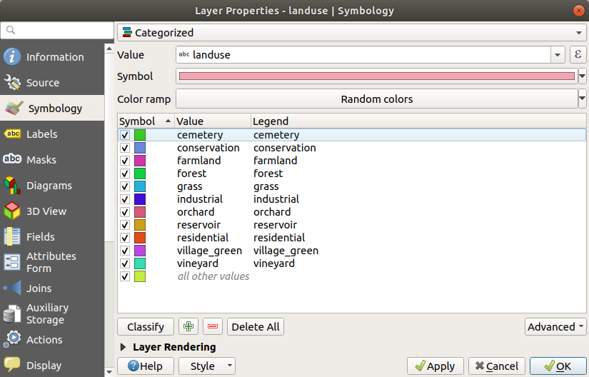
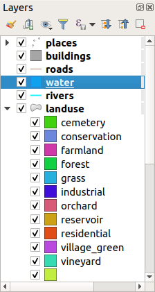
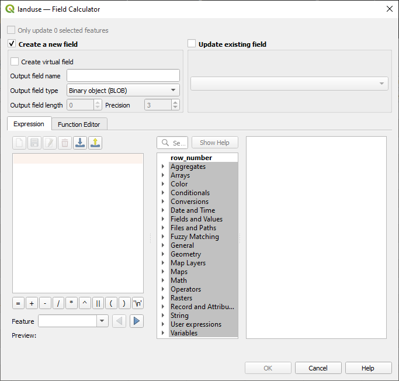

重要
翻訳は あなたが参加できる コミュニティの取り組みです。このページは現在 100.00% 翻訳されています。
3.3. レッスン: 分類
ラベルは、個々の地名などの情報を伝えるのに適していますが、何にでも使えるわけではありません。例えば、それぞれの 土地利用 の領域が何に使われているのか知りたい人がいるとします。ラベルを使うと、こうなります：
これでは地図のラベルが読みにくくなり、地図上に多数の異なる土地利用の領域がある場合は過剰にさえなります。
このレッスンの目標： 効果的にベクタデータを分類する方法を学習します。
3.3.1. ★☆☆ （初級レベル） 理解しよう: 名義データを分類する
landuseレイヤの レイヤプロパティ ダイアログを開きますシンボロジ タブをクリックします
単一定義 と言うドロップダウンをクリックし、それを カテゴリ値による定義 に変更します：

新しいパネルで、 値 を
landuseに、 カラーランプ を Random colors に変更します分類 ラベルの付いたボタンをクリックします
 OK をクリックします
このように表示されるはずです:

レイヤ パネルの
landuseの横にある矢印（またはプラス記号）をクリックすると、分類の説明が表示されます: これで土地利用ポリゴンに色が付き、同じ土地利用をするエリアは同じ色になるように分類されました。
必要であれば、 レイヤ パネルまたは レイヤプロパティ ダイアログで該当するカラーブロックをダブルクリックして、各土地利用区域のシンボルを変更することができます:

空の分類が一つあることに注意してください：
この空の分類は、landuse値が定義されていない、あるいは NULL 値を持つオブジェクトに色を付けるために使用されます。この空の分類は、 NULL 値を持つ区域が地図上で表現されるようにするために有用です。空白または NULL 値をより明確に表現するために色を変更することもできます。
すべての苦労して稼いだ変更を失わないように、今、地図を保存することを忘れないでください！
3.3.2. ★☆☆ （初級レベル） 自分でやってみよう: その他の分類
上記で得た知識を使って buildings レイヤを分類します。 building フィールドに対して分類を設定し、 Spectral カラーランプを使用します。
注釈
忘れずに、都市エリアを拡大して結果を確認してください。
3.3.3. ★★☆ （中級レベル） 理解しよう: 比率分類
分類には4つのタイプがあります： 名義 、 順序 、 間隔 、 比率 。
名義 分類では、対象を分類するカテゴリは名前ベースであり、順序はありません。例えば、町名、地区コードなど。名義データに使用する記号は、順序や大きさを意味するものであってはなりません。
ポイントには、さまざまな形の記号を使うことができます。
ポリゴンには、異なるタイプのハッチングや異なる色（明るい色と暗い色の混在を避ける）を使用することができます。
ラインには、異なるダッシュパターン、異なる色（明るい色と暗い色の混在を避ける）、線に沿った異なる記号を使用することができます。
順序 分類では、カテゴリは一定の順序で並べられます。例えば、世界の都市は、世界貿易、旅行、文化などに対する重要性に応じてランク付けされます。順序データに使用する記号は、順序を意味するものでなければなりませんが、大きさを意味するものであってはなりません。
ポイントには、明るい色から暗い色の記号を使うことができます。
ポリゴンには、段階的な色（明るい色から暗い色）を使うことができます。
ラインには、段階的な色（明るい色から暗い色）を使うことができます。
間隔 分類では、数値は正、負、ゼロの値を持つ目盛りになっています。例：海抜の高さ/海抜の低さ、気温（摂氏）。区間データに使用する記号は、順序と大きさを意味するものでなければなりません。
ポイントには、さまざまな大きさ（小さいものから大きいものまで）の記号を使うことができます。
ポリゴンには、段階的な色（明るい色から暗い色）を使ったり、さまざまな大きさの図を追加することができます。
ラインには、太さ（細いから太い）を使うことができます。
比率 分類では、数値は正とゼロの値だけを持つスケールになっています。例：絶対零度（0度ケルビン）以上の温度、ある地点からの距離、ある通りの1ヶ月の平均交通量など。比率データに用いる記号は、順序や大きさを意味するものでなければなりません。
ポイントには、さまざまな大きさ（小さいものから大きいものまで）の記号を使うことができます。
ポリゴンには、段階的な色（明るい色から暗い色）を使ったり、さまざまな大きさの図を追加することができます。
ラインには、太さ（細いから太い）を使うことができます。
上記の例では、名義分類を使用して、 landuse （土地利用）レイヤの各レコードを landuse 属性に基づいて色付けしました。今度は、比率分類を使って、レコードを面積で分類してみます。
レイヤを再分類するので、既存の分類は保存しないと失われます。現在の分類を保存するには:
レイヤのプロパティダイアログを開きます
スタイル ドロップダウン メニューの スタイルを保存 ... ボタンをクリックします。
現在の名前を変更... を選び、
land usageを入力し、 OK を押します。カテゴリとその記号がレイヤのプロパティに保存されました。
スタイル ドロップダウンメニューの 追加… エントリをクリックし、
ratioという名前の新しいスタイルを作成します。これで、新しい分類が保存されます。レイヤプロパティ ダイアログを閉じます
土地利用区域を大きさで分類したいのですが、問題があります：大きさのフィールドがないので、作らなければなりません。
landuseレイヤの属性テーブルを開きます。 トグル編集 ボタンをクリックして編集モードにします
トグル編集 ボタンをクリックして編集モードにします 新規フィールド ボタンを使って、
新規フィールド ボタンを使って、 AREAという倍精度の新しい列を追加します。
OK をクリックします
新しいフィールドが追加されます (テーブルの右端; 見るには水平方向にスクロールする必要があるかもしれません)。しかし、現時点では、このフィールドには何も入力されておらず、たくさんの NULL 値があります。
この問題を解決するために、面積を計算する必要があります。
 ボタンでフィールド計算機を開きます。
ボタンでフィールド計算機を開きます。このようなダイアログが表示されます：
  既存のフィールドを更新する をチェックします
既存のフィールドを更新する をチェックしますフィールドのドロップダウンメニューから、 AREA を選びます

式 タブで、リスト内の ジオメトリ 関数グループを展開し、 を見つけます
それをダブルクリックして、 式 フィールドに表示させます

OK をクリックします
属性テーブルの
AREAフィールドまでスクロールすると、値が入力されていることがわかります（データを更新するために列のヘッダーをクリックする必要がある場合があります）。
注釈
これらの面積はプロジェクトの面積単位の設定に従いますので、平方メートルまたは平方度の単位を使用できます。
属性テーブルを閉じます
{kind=link}
これでデータが揃ったので、それを使って 土地利用 レイヤをレンダリングしてみましょう。
landuseレイヤの レイヤプロパティ ダイアログの シンボロジ タブを開きます分類スタイルを カテゴリ値による定義 から 連続値による定義 に変更します
値 を
AREAに変更します。カラーランプ の下にある カラーランプを新規作成… オプションを選びます

勾配グリッド を選択し（まだ選択されていない場合）、 OK をクリックします。このように表示されます：
これを使用して小さな地域は 色1、大きな地域は 色2 で表示します。
適切な色を選びます
例では、結果は次のようになります。

OK をクリックします
カラーランプ タブの カラーランプを保存... を選択すると、カラーランプを保存することができます。カラーランプに適切な名前を選び、 保存 をクリックします。これで、同じカラーランプを 全カラーランプ で簡単に選択できるようになります。
モード の下から
 棟梁分類 (Quantile) を選びます。
棟梁分類 (Quantile) を選びます。分類 をクリックします。
これで、次のようなものができあがります:

そのまま他のすべてを残します。
OK をクリックします:
3.3.4. ★★☆ （中級レベル） 自分でやってみよう: 分類の絞り込み
理にかなった分類を得るまで モード と クラス の値を変更します。
答え
使用した設定は同じではないかもしれませんが、 Classes = 6 と Mode = Natural Breaks (Jenks) （そしてもちろん同じ色を使用）では、地図は次のようになります：

3.3.5. ★★★ （上級レベル） 理解しよう: 規則に基づく分類
分類のための複数の条件を組み合わせると便利ですが、残念ながら通常の分類では1つの属性だけを考慮に入れます。このときルールによる分類が有用になります。
このレッスンでは、Swellendam 市をその他の住宅地、そしてその他の種類の土地利用（面積に基づく）から簡単に識別できるように、 landuse レイヤを表現してみます。
landuseレイヤの レイヤプロパティ ダイアログを開きますシンボロジ タブに切り替えます
分類スタイルを ルールによる定義 に切り替えます
QGISはこのレイヤに現在実装されている分類を表すルールを自動的に表示します。例えば、上記の演習を終えた後、以下のように表示されるかもしれません：

全てのルールを選択するようクリックしドラッグします
 選択したルールを削除 ボタンを使って、既存のルールをすべて削除します
選択したルールを削除 ボタンを使って、既存のルールをすべて削除します
では、カスタムルールを追加してみましょう。
 ルールを追加 ボタンをクリックします
ルールを追加 ボタンをクリックしますEdit rule ダイアログが現れます
ラベルに
Swellendam cityを入力しますフィルタ テキストエリアの隣にある
 ボタンをクリックして 式文字列ビルダ を開きます
ボタンをクリックして 式文字列ビルダ を開きます条件
"name" = 'Swellendam'を入力し検証します
ルールの編集 ダイアログに戻り、その地域での町の重要性を示すために濃いグレーブルーの色を割り当て、境界を削除します。

OK を押します
次のルールを追加するために上記のステップを繰り返します：
Other residential ラベルは、条件
"landuse" = 'residentail' AND "name" <> 'Swellendam'。淡いブルーグレーの 塗りつぶし を選びます。Big non residential areas ラベルは、条件
"landuse" <> 'residential' AND "AREA" >= 605000。色は中緑色を選びます。
これらのフィルターは排他的なものであり、地図上の地域を除外します（605000（平方メートル）より小さい非居住地域は、いずれのルールにも含まれません）。
残りの地物は Small non residential areas というラベルの付いた新しいルールを使って捕えます。フィルター式の代わりに、
 もしくは をチェックします。このカテゴリに適切な淡い緑色を与えます。
もしくは をチェックします。このカテゴリに適切な淡い緑色を与えます。
ルールは次のようになります：

このシンボル体系を適用します
地図は次のようになります。

今、 最も顕著な住宅地 Swellendam とその他の非住宅地をその大きさに応じた色の地図を持っています。
3.3.6. 結論
シンボロジにより、レイヤの属性を読みとりやすく表現できます。それは選択した任意の関連する属性を使用して、私たちだけでなく地図読者も地物の重要性を理解できます。直面している問題に応じて、それらを解決するために異なる分類技法を適用するでしょう。
3.3.7. 次は?
これで見栄えの良い地図になりましたが、どのようにしてそれをQGISからプリントアウトできる形式に、または画像やPDFにしようとしていますか？それは、次のレッスンの話題です！